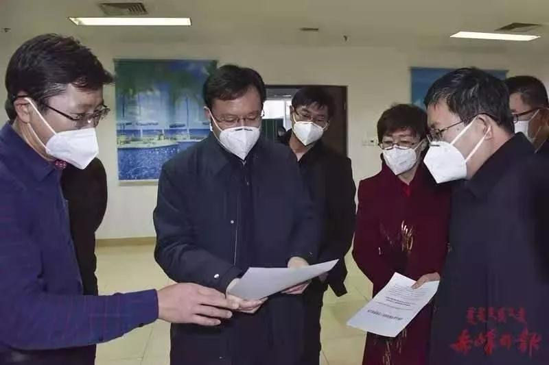
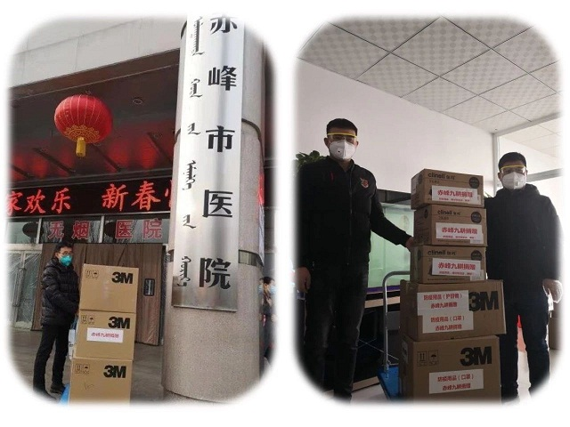

自新型冠状病毒感染的肺炎疫情发生以来，一场关系到全国人民生命健康的疫情防控战已经打响。防控疫情，人人有责。连日来，我市统一战线充分发挥优势，全力配合，积极参与，通过多种方式，为打赢疫情防控阻击战贡献统战力量。
面对阻击新型冠状病毒感染的肺炎疫情这场没有硝烟的战争，农工党赤峰市委积极响应国家、自治区和市委、市政府坚决打赢疫情防控阻击战的号召，第一时间转发《农工党自治区委致全区各级组织和广大农工党员的一封信》，医务人员提前返岗，广大党员通过微信群、朋友圈等形式积极宣传科学防控知识。有的积极请愿，远赴湖北支援一线；有的坚守一线，全力阻击疫情；有的慷慨解囊，奉献社会。在抗击疫情中，用实际行动践行着农工党员的担当和初心。今天，我们就一起来看看这些奋战在疫情一线的最可爱的人。

李艳茹，农工党赤峰市委主委、市政府副市长。在这场疫情阻击战中，她担任市新型冠状病毒感染的肺炎防控工作指挥部常务副总指挥。从春节前的总体防控部署，到如今对各医疗机构的新冠肺炎排查救治的总协调，没有休息一天，每天都出现在抗击疫情的第一现场，指挥、督促、协调诊疗、救治、感控等各项工作。针对疫情防控工作亟需最大限度控制传染源，减少人员流动，向有关部门提交了《新型肺炎蔓延，延迟春节假期迫在眉睫》的社情民意信息。
董彩凤，赤峰学院附属医院呼吸科副主任护师。主动请缨，自愿报名参加内蒙古首批支援湖北新型冠状病毒感染肺炎疫情医疗队，1月28日随队前往湖北，目前在疫情严重的湖北省荆门市钟祥市疫情一线工作。
孙庆芬、刘颖刚、赵晓薇、尚英兆4位农工党员，作为赤峰市新型冠状病毒感染肺炎病例医疗救治专家组成员，奋战在抗击疫情的一线。除夕至今，未曾进家门，在各自的岗位上尽职尽责，为打赢这场疫情阻击战贡献着自己的力量。
吕文丽，赤峰学院附属医院门诊部副主任。疫情来临，从事医院门诊就诊及发热患者的预检分诊工作，坚决把好发热门诊的第一道关口。赤峰市第一例确诊病例就是由她们测试体温，然后进行分诊的。

农工党员李斌，赤峰市九耕医疗器械有限公司总经理，捐赠了价值35万元的口罩、消毒湿巾、护目镜、防护衣、消毒液、一次性橡胶手套等医用防护物资。农工党员崔铁梅，赤峰市金三角医疗器械有限公司董事长，捐赠了价值三万元红外线额温计和消毒液。
生命重于泰山，疫情就是命令，防疫就是责任。在这场没有硝烟的战役中，赤峰统一战线在市委的坚强领导下，将进一步凝心聚力，众志成城，同舟共济，共克疫情，坚决打赢这场疫情防控阻击战！